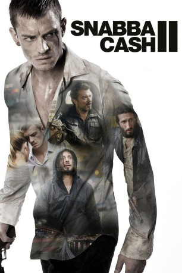

#5941 Easy Money II - Mach sie fertig
Alternativ: Easy Money II: Hard to Kill (Englischer Titel)
 
 IMDB-Wertung: 6.2 / 10
IMDB-Wertung: 6.2 / 10  Metascore: 0
Metascore: 0 
Johan "W" Westlund, Jorge und Mrado sind zurück: Nach dem überwältigenden internationalen Erfolg des ersten Teils "Easy Money I - Spür die Angst" findet die Geschichte der multikulturellen Kleingangster in Stockholm nun ihre Fortsetzung (2012) - eine weitere spannende Schilderung eines großen Scheiterns.
BDRIP DUBBED
Jahr: 2012
Dauer: 96 Minuten
FSK:
Land: Schweden Studio: Cinedigm Entertainment GroupTonspuren: DD2.0 - ,
Untertitel:
Auflösung: 1080p (1920x800) Größe: 6533 MB
Genre: Action, Thriller, Drama, Krimi
Regisseur: Babak Najafi
Drehbuch: Pete Hamill
Soundtrack:
Darsteller:
 Joel Kinnaman als JW
Joel Kinnaman als JW Matias Varela als Jorge
Matias Varela als Jorge- Dragomir Mrsic als Mrado
 Fares Fares als Mahmoud
Fares Fares als Mahmoud- Dejan Cukic als Radovan
- Lisa Henni als Sophie
- Fabian Bolin als Philipp
- Annika Ryberg Whittembury als Paola
- Cedomir Djordjevic als Radovans män
- Christopher Wagelin als Andreas
- Bailey Bucher als Daughter
- Mads Korsgaard als Nippes friend
- Madeleine Martin als Nadja
- Joel Spira als Nippe
- Ricardo Marceliono Araneda Moreno als Victor
- Luis Cifuentes als Rolando
- Lea Stojanov als Lovisa
- Prvoslav Gane Dzakovic als Ratko
- Stanko Sasha Dzakovic als Radovans män
- Oliver Krstic als Radovans män
- Sasa Petrovic als Radovans män
- Hamdisa Causevic als Radovans män
- Rolf Jenner als Axel Bolinder
- Peter Carlberg als Misha Bladman
- Vivianne Romanos als Jamila
- Joseph Kasten als Bashir
- Aida Najia Tuqan als Jivan
- Kina Jacobsson als Kriminalvårdschef
- Jim Tossavainen als Plit
- Elin Swedsudde als Receptionist
- Monica Albornoz als Rosita
- Silvana Mardini als Kvinna på bröllop
- Joanna Voss als Kvinna på fosterhem
Datei: X:\2-Dilogie(A-F)\Easy Money\Easy Money II - Mach sie fertig (2012, FSK, 1920x800).mkv seit 07.04.2017
Festplatte: HD Collection-2(A-Z)-3(A-M)
 Alle Filme aus Gruppe '2-Dilogie(A-F)\Easy Money'
Alle Filme aus Gruppe '2-Dilogie(A-F)\Easy Money'
- Easy Money
- Easy Money II - Mach sie fertig (der aktuelle Film)